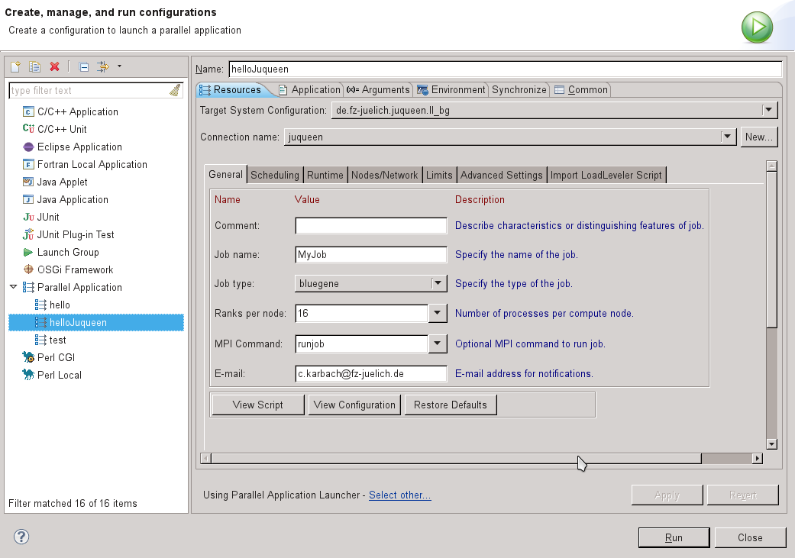
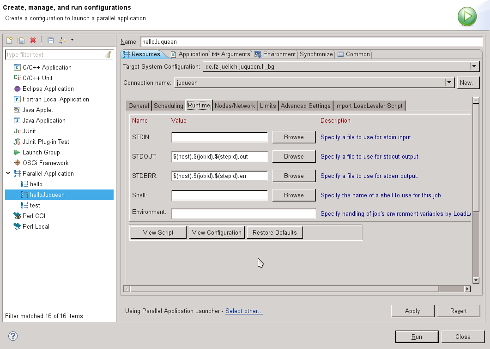
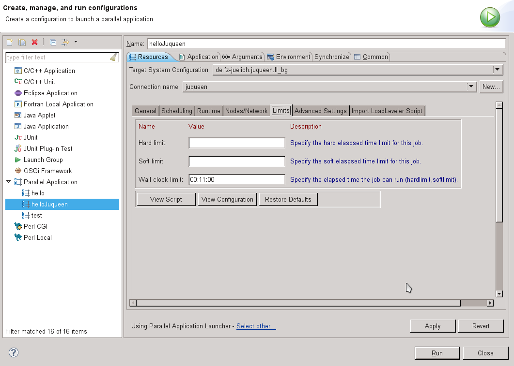
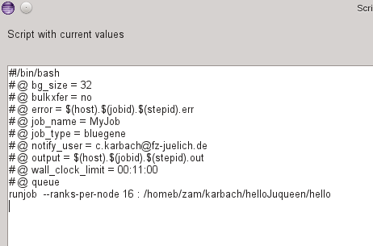

JUQUEEN is a computing resource at the Juelich Supercomputing Centre.
In order to run a batch job on JUQUEEN from PTP, first create a C/C++/Fortran project, and build it. For more information, see
As described in Running Parallel Programs, next create a run configuration via Run > Run Configurations ... and create a new Parallel Application.
Choose de.fz-juelich.juqueen.ll_bg as target system configuration.
JUQUEEN is an IBM Blue Gene/Q system. Its target system configuration is based on the IBM LoadLeveler (Blue Gene) target system configuration. General Settings for a job submission on JUQUEEN are shown in the following snap shot.
Except for the E-mail parameter used for notifications on job completions, all parameters can be found in the IBM LoadLeveler (Blue Gene) target system configuration. On a Blue Gene system you usually have to select job type bluegene. With Ranks per Node the number of processes per compute node are set.
Moreover, the location for in- and output files can be configured as shown in the following snap shot. In the shown case, the standard output and standard error files are named dynamically. The variables host, jobid and stepid will be replaced with the corresponding values for each job.
The limits section allows for instance to provide a wall clock limit.
By filling in the shown parameters, the following batch script is generated.
You can always adapt the parameter values and check the produced job script afterwards by clicking on the View Script button.
Finally, you have to select the binary, which has to be executed, on the Application tab. Once your configuration is complete, you can click on the Run button to submit your job.
For more information see the run configuration setup for running your parallel application which also describes specifying the Application program on the Application tab, and specifying any other information required.